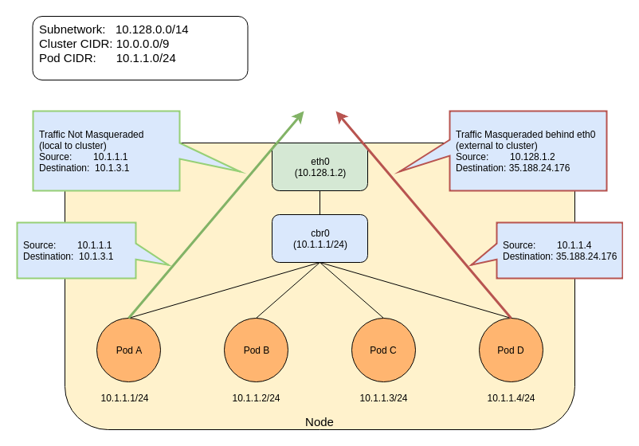

This page shows how to configure and enable the
ip-masq-agent.
Before you begin
You need to have a Kubernetes cluster, and the kubectl command-line tool must be configured to communicate with your cluster. It is recommended to run this tutorial on a cluster with at least two nodes that are not acting as control plane hosts. If you do not already have a cluster, you can create one by using minikube or you can use one of these Kubernetes playgrounds:
- iximiuz Labs
- Killercoda
- KodeKloud To
check the version, enter
kubectl version.
IP Masquerade Agent User Guide
The ip-masq-agent configures iptables rules to hide a
pod's IP address behind the cluster node's IP address. This is typically
done when sending traffic to destinations outside the cluster's pod CIDR
range.
Key Terms
- NAT (Network Address Translation): Is a method of remapping one IP address to another by modifying either the source and/or destination address information in the IP header. Typically performed by a device doing IP routing.
- Masquerading: A form of NAT that is typically used to perform a many to one address translation, where multiple source IP addresses are masked behind a single address, which is typically the device doing the IP routing. In Kubernetes this is the Node's IP address.
- CIDR (Classless Inter-Domain Routing): Based on the variable-length subnet masking, allows specifying arbitrary-length prefixes. CIDR introduced a new method of representation for IP addresses, now commonly known as CIDR notation, in which an address or routing prefix is written with a suffix indicating the number of bits of the prefix, such as 192.168.2.0/24.
- Link Local: A link-local address is a network address that is valid only for communications within the network segment or the broadcast domain that the host is connected to. Link-local addresses for IPv4 are defined in the address block 169.254.0.0/16 in CIDR notation.
The ip-masq-agent configures iptables rules to handle masquerading
node/pod IP addresses when sending traffic to destinations outside the
cluster node's IP and the Cluster IP range. This essentially hides pod
IP addresses behind the cluster node's IP address. In some environments,
traffic to "external" addresses must come from a known machine address.
For example, in Google Cloud, any traffic to the internet must come from
a VM's IP. When containers are used, as in Google Kubernetes Engine, the
Pod IP will be rejected for egress. To avoid this, we must hide the Pod
IP behind the VM's own IP address - generally known as "masquerade". By
default, the agent is configured to treat the three private IP ranges
specified by RFC 1918
as non-masquerade CIDR.
These ranges are 10.0.0.0/8, 172.16.0.0/12,
and 192.168.0.0/16. The agent will also treat link-local
(169.254.0.0/16) as a non-masquerade CIDR by default. The agent is
configured to reload its configuration from the location
/etc/config/ip-masq-agent every 60 seconds, which is also
configurable.

The agent configuration file must be written in YAML or JSON syntax, and may contain three optional keys:
nonMasqueradeCIDRs: A list of strings in CIDR notation that specify the non-masquerade ranges.masqLinkLocal: A Boolean (true/false) which indicates whether to masquerade traffic to the link local prefix169.254.0.0/16. False by default.resyncInterval: A time interval at which the agent attempts to reload config from disk. For example: '30s', where 's' means seconds, 'ms' means milliseconds.
Traffic to 10.0.0.0/8, 172.16.0.0/12 and 192.168.0.0/16 ranges will NOT be masqueraded. Any other traffic (assumed to be internet) will be masqueraded. An example of a local destination from a pod could be its Node's IP address as well as another node's address or one of the IP addresses in Cluster's IP range. Any other traffic will be masqueraded by default. The below entries show the default set of rules that are applied by the ip-masq-agent:
iptables -t nat -L IP-MASQ-AGENTtarget prot opt source destination
RETURN all -- anywhere 169.254.0.0/16 /* ip-masq-agent: cluster-local traffic should not be subject to MASQUERADE */ ADDRTYPE match dst-type !LOCAL
RETURN all -- anywhere 10.0.0.0/8 /* ip-masq-agent: cluster-local traffic should not be subject to MASQUERADE */ ADDRTYPE match dst-type !LOCAL
RETURN all -- anywhere 172.16.0.0/12 /* ip-masq-agent: cluster-local traffic should not be subject to MASQUERADE */ ADDRTYPE match dst-type !LOCAL
RETURN all -- anywhere 192.168.0.0/16 /* ip-masq-agent: cluster-local traffic should not be subject to MASQUERADE */ ADDRTYPE match dst-type !LOCAL
MASQUERADE all -- anywhere anywhere /* ip-masq-agent: outbound traffic should be subject to MASQUERADE (this match must come after cluster-local CIDR matches) */ ADDRTYPE match dst-type !LOCAL
By default, in GCE/Google Kubernetes Engine, if network policy is
enabled or you are using a cluster CIDR not in the 10.0.0.0/8 range, the
ip-masq-agent will run in your cluster. If you are running
in another environment, you can add the ip-masq-agent DaemonSet to
your cluster.
Create an ip-masq-agent
To create an ip-masq-agent, run the following kubectl command:
kubectl apply -f https://raw.githubusercontent.com/kubernetes-sigs/ip-masq-agent/master/ip-masq-agent.yamlYou must also apply the appropriate node label to any nodes in your cluster that you want the agent to run on.
kubectl label nodes my-node node.kubernetes.io/masq-agent-ds-ready=trueMore information can be found in the ip-masq-agent documentation here.
In most cases, the default set of rules should be sufficient; however, if this is not the case for your cluster, you can create and apply a ConfigMap to customize the IP ranges that are affected. For example, to allow only 10.0.0.0/8 to be considered by the ip-masq-agent, you can create the following ConfigMap in a file called "config".
Note:
It is important that the file is called config since, by default,
that will be used as the key for lookup by the
ip-masq-agent:
nonMasqueradeCIDRs:
- 10.0.0.0/8
resyncInterval: 60sRun the following command to add the configmap to your cluster:
kubectl create configmap ip-masq-agent --from-file=config --namespace=kube-systemThis will update a file located at
/etc/config/ip-masq-agent which is periodically checked
every resyncInterval and applied to the cluster node. After
the resync interval has expired, you should see the iptables rules
reflect your changes:
iptables -t nat -L IP-MASQ-AGENTChain IP-MASQ-AGENT (1 references)
target prot opt source destination
RETURN all -- anywhere 169.254.0.0/16 /* ip-masq-agent: cluster-local traffic should not be subject to MASQUERADE */ ADDRTYPE match dst-type !LOCAL
RETURN all -- anywhere 10.0.0.0/8 /* ip-masq-agent: cluster-local
MASQUERADE all -- anywhere anywhere /* ip-masq-agent: outbound traffic should be subject to MASQUERADE (this match must come after cluster-local CIDR matches) */ ADDRTYPE match dst-type !LOCALBy default, the link local range (169.254.0.0/16) is also handled by
the ip-masq agent, which sets up the appropriate iptables rules. To have
the ip-masq-agent ignore link local, you can set
masqLinkLocal to true in the ConfigMap.
nonMasqueradeCIDRs:
- 10.0.0.0/8
resyncInterval: 60s
masqLinkLocal: true